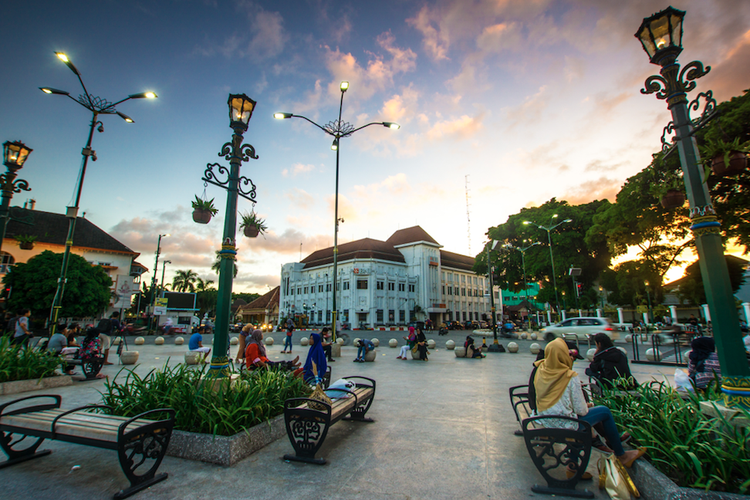

Sistem Rekomendasi Pintar (DSS)
Atur Preferensi Wisata Anda
Hasil Rekomendasi
REKOMENDASI TERBAIK
Candi Borobudur
⭐ 4.8 • 📍 Magelang, Jawa Tengah
Dipilih karena memiliki rating tinggi, cuaca cerah, dan akses transportasi mudah.
Lihat Detail
Skor DSS
92.5

REKOMENDASI 2
Candi Prambanan
⭐ 4.7 • 📍 Sleman, Yogyakarta
Memiliki nilai budaya tinggi dengan fasilitas wisata lengkap dan cuaca yang mendukung.
Lihat Detail
Skor DSS
89.3

REKOMENDASI 3
Malioboro
⭐ 4.6 • 📍 Yogyakarta
Cocok untuk wisata santai dengan akses transportasi mudah dan banyak pilihan kuliner.
Lihat Detail
Skor DSS